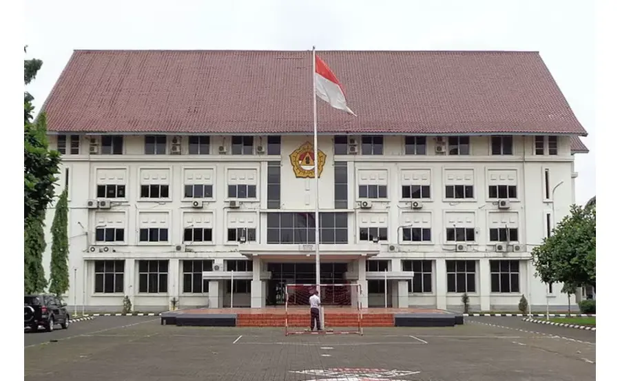

Universitas Paramadina.

merupakan universitas yang berlokasi di Jakarta yang diselenggarakan oleh Yayasan Melati Sakura yang bernaung di bawah Perhimpunan Persahabatan Indonesia-Jepang (PPIJ), sebagai Badan Hukum Penyelenggaranya. Menurut sejarahnya, pada tanggal 15 November 1965, kalangan senior alumni Jepang mendirikan Akademi Bahasa dan Kebudayaan Jepang – ABKJ- yang dikemudian hari menjadi Akademi Bahasa Asing Melati Sakura. Sejumlah senior alumni Jepang yang pernah berbakti sebagai direktur lembaga pendidikan tersebut, Hasan Rahaya MA (1965 – 1966). Moh. Soedjiman LLM, MCL (1966 – 1967). Drs. Julianto MA (1967 – 1968). Drs. Wahjosumidjo (1968 – 1975). Terakhir, R Sugeng Subroto MA (1975 – 1988).
Akademi Bahasa dan Kebudayaan Jepang dan atau Akademi Bahasa Asing MESRA itulah, dijadikan embrio dari keberadaan Universitas Darma Persada yang didirikan oleh himpunan anak-anak bangsa yang bersatu dan berkarya dalam wadah PERSADA, Perhimpunan Alumni dari Jepang. Pendirian Universitas Darma Persada diprakarsai oleh lima eksponen alumni dari Jepang: Indra kartasasmita, Soegeng Soebroto, Sudjiman, Purwanto dan Abdillah Muchsin. Prakarsa tersebut, mereka teruskan ke PERSADA di bawah kepemimpinan ketua umum, Yoga Soegomo, yang berikutnya mengundang rapat anggota PERSADA. Maret 1986. Rapat yang berlangsung di jalan KH Wahid Hasyim 76, jakarta Pusat dan dihadiri 60 anggota waktu itu, sepakat untuk mendirikan suatu Universitas.
Terbentuklah Panitia Pendiri Universitas Darma Persada yang diketuai Indra Kartasasmita dengan 11 pelindung/ penasehat, seperti Yoga Soegomo, Husein Kartasasmita, Martono, Ginandjar Kartasasmita, Syarief Thayeb, Widarsadipradja, Sayidiman Suryohadiprojo, Satrio, Tumbelaka, Umarjadi Njotowijono, dan Utoyo Sukaton. UNSADA secara resmi berdiri pada tanggal 6 Juli 1986, atas prakarsa dan dukungan organisasi Perhimpunan Alumni dari Jepang (PERSADA) bekerjasama dengan organisasi Perhimpunan Persahabatan Indonesia-Jepang (PPIJ), berdasarkan piagam kerjasama yang ditandatangani tanggal 17 Februari 1986. UNSADA memulai kegiatannya berdasarkan Surat persetujuan KOPERTIS III nomor 15/Kop. III/S. VII/1986 tertanggal 8 Juli 1986 (terlampir), dengan menyelenggarakan 4 program studi. Dengan tekad ingin mendarma baktikan ilmunya kepada negara dan bangsa, maka para pendiri (yang juga anggota PERSADA) secara terus-menerus senantiasa menjaga kelestarian serta berupaya mengembangkan UNSADA.Sampai dengan saat ini UNSADA telah menyelenggarakan 15 (lima belas) program studi yang diwadahi dalam 4 (empat) Fakultas dan 1 (satu) Pascasarjana.